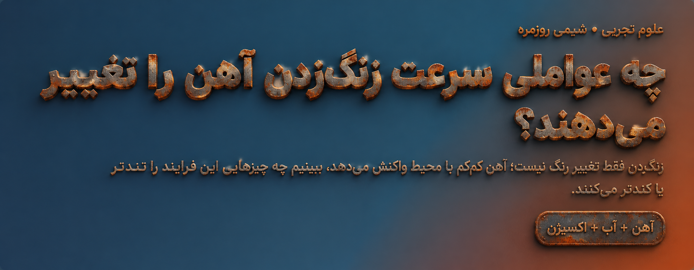
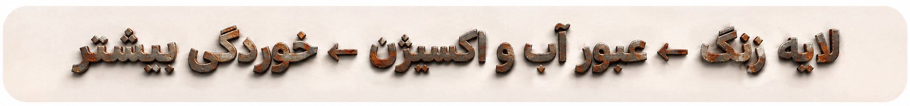

آب و اکسیژن هر دو لازماند
در حضور رطوبت و اکسیژن، سطح آهن دچار واکنشهای شیمیایی میشود و ترکیبهای اکسیدی و هیدروکسیدی آهن بهوجود میآیند که به آنها زنگ میگوییم. آبِ خالص بهتنهایی یا هوای خشک معمولاً زنگزدن را بسیار محدود میکند.

در حضور رطوبت و اکسیژن، سطح آهن دچار واکنشهای شیمیایی میشود و ترکیبهای اکسیدی و هیدروکسیدی آهن بهوجود میآیند که به آنها زنگ میگوییم. آبِ خالص بهتنهایی یا هوای خشک معمولاً زنگزدن را بسیار محدود میکند.
زنگ آهن لایهای متخلخل و شکننده است و مانند رنگِ سالم، سطح فلز را کامل نمیپوشاند. در نتیجه آب و اکسیژن میتوانند به آهن زیرین برسند و فرایند خوردگی ادامه یابد.

وجود لایهای از آب روی آهن، واکنشهای خوردگی را ممکن میکند. محیط مرطوب معمولاً از محیط خشک زنگزنندهتر است.
نمک، بهویژه یون کلرید، رسانایی آب را بالا میبرد و میتواند لایهٔ سطحی را آسیبپذیر کند؛ به همین دلیل آب دریا و نمک جاده خطر زنگزدگی را بیشتر میکنند.
با بالا رفتن دما، واکنشهای شیمیایی اغلب تندتر میشوند. اما اگر گرما باعث خشکشدن آهن شود، کاهش رطوبت میتواند اثر را کم کند؛ پس دما را باید همراه رطوبت سنجید.
آب اسیدی و بعضی آلایندهها میتوانند خوردگی آهن را تند کنند. اثر دقیق به نوع محلول و شرایط آن وابسته است.
سطح خراشیده یا بدون پوشش بیشتر در تماس با آب و هواست. رنگ، روغن و پوششهای سالم این تماس را کم میکنند؛ خراشِ پوشش میتواند نقطهٔ شروع زنگ باشد.
تماس آهن با فلزی متفاوت در حضور آبِ رسانا گاهی خوردگی الکتروشیمیایی را تغییر میدهد یا تشدید میکند. نتیجه به نوع فلزها و اندازهٔ سطح تماس بستگی دارد.